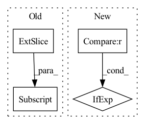

Pattern ID :3339

Before Change
key_layer = key_layer.transpose(1, 0).reshape(output_size[3], output_size[0] * output_size[1], -1)
// slice alibi tensor until the query length
sliced_alibi = alibi[: output_size[0] * output_size[1], :, : output_size[3]]
// Raw attention scores. [batch_size * num_heads, q_length, k_length]
beta = 1.0 / self.layer_number
After Change
output_attentions=False,
):
if alibi is None:
current_sequence_length = hidden_states.shape[1] + (0 if layer_past is None else layer_past[0].shape[1])
alibi = build_alibi_tensor(
current_sequence_length, n_head=self.num_heads, dtype=hidden_states.dtype, device=hidden_states.device
)
In pattern: SUPERPATTERN
Frequency: 3
Non-data size: 4
Instances
Fragment ID: 17246822
Project Name: bigscience-workshop/distributed-bloom
Commit Name: 5d8f7be5466b7a40fb777bde973ca773b378e83a
Time: 2022-06-20
Author: justheuristic@gmail.com
File Name: src/bloom/block.py
M Class Name: BloomAttention
N Class Name: BloomAttention
M Method Name: forward(9)
N Method Name: forward(9)
M Parent Class: nn.Module
N Parent Class: nn.Module
M File Name: src/bloom/block.py
N File Name: src/bloom/block.py
M Start Line: 78
M End Line: 125
N Start Line: 78
N End Line: 123
'>
Before Change
if fv_alter is None:
v_in = fv
else:
v_in = fv * dec[:, :, 0].unsqueeze(-1) + fv_alter * dec[:, :, 1].unsqueeze(-1)
fused = self.fuse(v_in, fi)
out, hc = self.rnn(fused) if prev is None else self.rnn(fused, prev)
After Change
prev = (prev[0].transpose(1, 0).contiguous(), prev[1].transpose(1, 0).contiguous())
// Select between fv and fv_alter
v_in = fv * dec[:, :, :1] + fv_alter * dec[:, :, -1:] if fv_alter is not None else fv
fused = self.fuse(v_in, fi)
out, hc = self.rnn(fused) if prev is None else self.rnn(fused, prev)
out = self.rnn_drop_out(out)
'>
Fragment ID: 17246830
Project Name: mingyuyng/visual-selective-vio
Commit Name: a8d443c68112716ac78b026ac1349e8f92c70641
Time: 2022-07-11
Author: mingyuy@umich.edu
File Name: model.py
M Class Name: Pose_RNN
N Class Name: Pose_RNN
M Method Name: forward(6)
N Method Name: forward(6)
M Parent Class: nn.Module
N Parent Class: nn.Module
M File Name: model.py
N File Name: model.py
M Start Line: 181
M End Line: 189
N Start Line: 184
N End Line: 184
'>
Before Change
//predict_vecs: batch_size, voc_dim, max_length
predict_vecs = torch.zeros(batch_size, self.voc_dim, tgt.size(1) ).to(self.device)
curr_sz = tgt.size(1)
predict_vecs[:,:,:curr_sz] = output[:,:,:curr_sz]
return predict_vecs
After Change
else hidden[0] //h_n
// hidden: 1, batch_size, hidden_dim * directions ->tking only last two layers
hidden = torch.cat((hidden[-2,:,:], hidden[-1,:,:]), dim = -1) if self.directions == 2 \
else hidden[:,-1,:]
//output :shp: batch_size, word_voc_dim
output = self.ffnn(hidden.squeeze(0))
'>
Fragment ID: 17246828
Project Name: ai4bharat/indiannlp-transliteration
Commit Name: dd71aab694ee1ae4c77b39cda0366d04f31f0909
Time: 2020-06-16
Author: josephgeobenjamin@gmail.com
File Name: algorithms/recurrent_nets.py
M Class Name: CorrectionBasicNet
N Class Name: VocabCorrectorNet
M Method Name: forward(3)
N Method Name: forward(4)
M Parent Class: nn.Module
N Parent Class: nn.Module
M File Name: algorithms/recurrent_nets.py
N File Name: algorithms/recurrent_nets.py
M Start Line: 618
M End Line: 640
N Start Line: 646
N End Line: 668